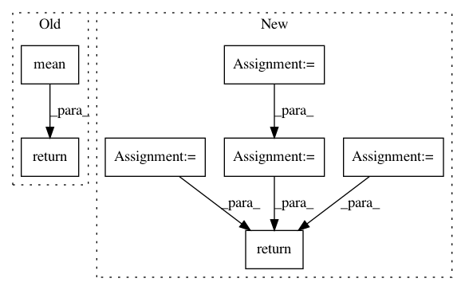

1a73a1367fedfa8368b6c42103e60e1b370bc14a,catalyst/contrib/criterion/focal_loss.py,FocalLoss,forward,#FocalLoss#Any#Any#,11
Before Change
invprobs = F.logsigmoid(-outputs * (targets * 2.0 - 1.0))
loss = (invprobs * self.gamma).exp() * loss
return loss.sum(dim=1).mean()
After Change
:param targets: [bs; num_classes]
:return:
num_classes = logits.size(1)
loss = 0
targets = targets.view(-1)
logits = logits.view(-1, num_classes)
for cls in range(num_classes):
// Filter anchors with -1 label from loss computation
if cls == self.ignore:
continue
cls_label_target = targets[..., cls].long()
cls_label_input = logits[..., cls]
loss += sigmoid_focal_loss(
cls_label_input,
cls_label_target,
gamma=self.gamma,
alpha=self.alpha
)
return loss
__all__ = ["FocalLossBinary", "FocalLossMultiClass", "FocalLossMultiLabel"]
In pattern: SUPERPATTERN
Frequency: 5
Non-data size: 7
Instances
Project Name: Scitator/catalyst
Commit Name: 1a73a1367fedfa8368b6c42103e60e1b370bc14a
Time: 2019-04-19
Author: scitator@gmail.com
File Name: catalyst/contrib/criterion/focal_loss.py
Class Name: FocalLoss
Method Name: forward
Project Name: kwgoodman/numerox
Commit Name: 841ea44e30577258ddae735701ef45055abdc3f8
Time: 2018-08-30
Author: kwgoodman@gmail.com
File Name: numerox/prediction.py
Class Name: Prediction
Method Name: __repr__
Project Name: inspirehep/magpie
Commit Name: e4488b9b68416439a226b48b74c22ae84c129db1
Time: 2016-02-10
Author: jan.stypka@cern.ch
File Name: magpie/api.py
Class Name:
Method Name: batch_test
Project Name: andosa/treeinterpreter
Commit Name: af66764dca05e5b26048533eb2e71fbbb705cbf0
Time: 2019-05-17
Author: vorl@volodymyrsmbp2.attlocal.net
File Name: treeinterpreter/treeinterpreter.py
Class Name:
Method Name: _predict_forest
Project Name: nipy/dipy
Commit Name: f84d08c5d0dbd61cc2196d1b9739009241340593
Time: 2012-11-09
Author: Bago.Amirbekian@ucsf.edu
File Name: dipy/sims/phantom.py
Class Name:
Method Name: add_noise